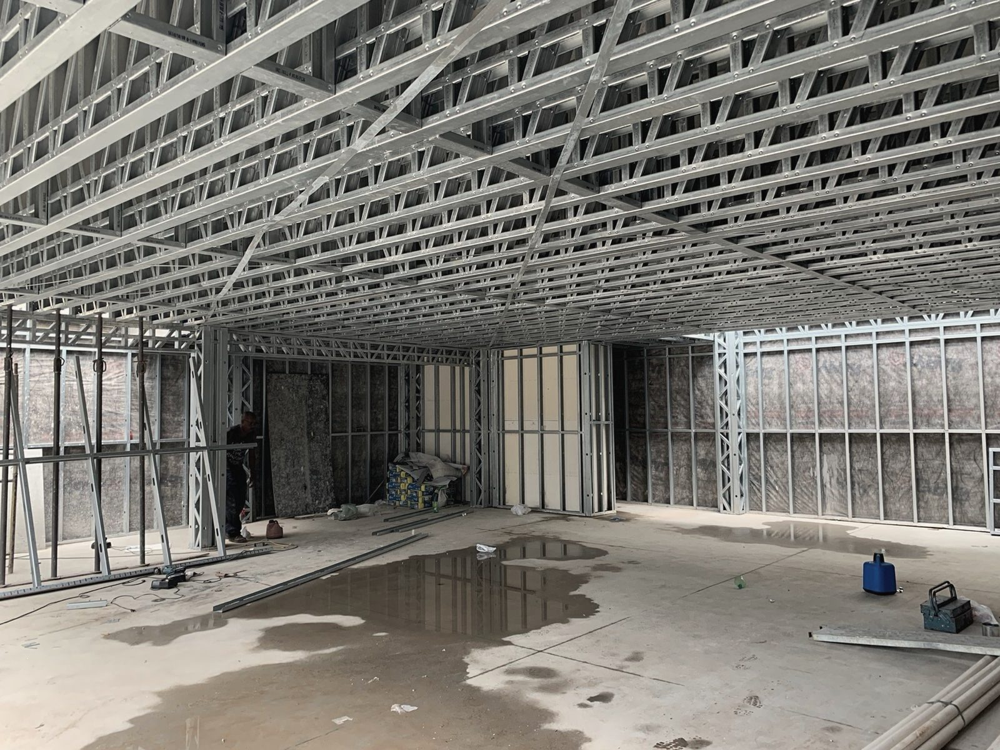

engenharia tributária
A obra paga INSS. Quase sempre a mais.
Projeto, execução e engenharia tributária, com uma única responsabilidade técnica.
O filme apresenta os serviços de Luis Gustavo Maia, engenheiro civil. A obra paga INSS, quase sempre a mais. Pelo INSS da obra: planejamento tributário, inscrição no CNO em até 30 dias do início, enquadramento do tipo de obra, aferição no Sero e certidão da obra. Resultado, pelos documentos da Receita: 29 obras aferidas, em 13 cidades de São Paulo e Mato Grosso, e R$ 101.998 de desconto documentado em nove obras. Steel frame não é moda, é engenharia. Projeto: projeto executivo em steel frame, projetos complementares, plano de corte e caderno de montagem, e estrutura metálica. Obra e regularização: acompanhamento de obra, projeto legal e aprovação, as built e laudo de habite-se, e regularização de construção. Sem terceirizar, sem delegar o que importa. Projeto, execução e engenharia tributária, com uma única responsabilidade técnica. Do terreno à chave.
Obras


Steel frame não é moda. É engenharia.
